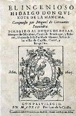
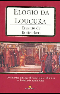
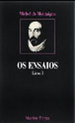
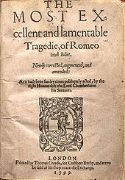

|
Divina ComédiaEscrita entre 1304 e 1321, por Dante Alighieri, é um poema de viés épico e teológico da literatura italiana e da mundial, dividida em três partes: Inferno, Purgatório e Paraíso. O poema chama-se “Comédia” não por ser engraçado mas porque termina bem (no Paraíso). Os lugares descritos por cada livro (o inferno, o purgatório e o paraíso) são divididos em nove círculos cada, formando no total 27 (3 vezes 3 vezes 3) níveis. Os três livros rimam no último verso, pois terminam com a mesma palavra: stelle, que significa ‘estrelas’. |
|  |
Dom QuixoteEscrito em 1605 (Volume 1) e 1615 (Volume 2), por Miguel de Cervantes, faz uma paródia aos romances de cavalaria que gozaram de imensa popularidade no período e, na altura, já se encontravam em declínio. O livro retoma a história do povo espanhol e da Europa, retratando as aventuras de seus inúmeros cavaleiros, sendo por isso considerado a última novela de cavalaria. Critica também as atitudes da sociedade e como alguns componentes desta alertaram para o problema de Dom Quixote e se esforçaram para tentar solucioná-lo. |
|  |
Elogio da LoucuraEscrito em 1511, por Erasmo de Rotterdam, o Elogio da Loucura é uma total sátira a sociedade dos séc. XV e XVI, onde ele tinha por objetivo fornecer uma nova visão eclesiástica e renovar a igreja, pois tentou mostrar a sociedade um espelho de si mesma. Seu escrito acabou tornando-se atemporal, pois se você ler O Elogio da Loucura hoje, ainda verá uma sociedade vivendo com os mesmos males e problemas de séculos atrás, a hipocrisia e a perda dos valores da vida ainda são constantes. A loucura, como a definição gramatical, é a insanidade mental, porém ele não define esse termo ao pé da letra, como uma condição humana que podemos adquirir, ele trata a loucura de uma forma externa ao homem, e o homem só será louco se desejar ser.
|
|  |
EnsaiosEscrito a partir de 1580, por Michel de Montaigne, analisa as instituições, as opiniões e os costumes, debruçando-se sobre os dogmas da sua época e tomando a generalidade da humanidade como objeto de estudo (em inglês).
Entre os principais ensaios de Montaigne, podemos citar:
1- “Por meios diversos se chega ao mesmo fim”, inspirado em acontecimentos históricos, trata da guerra para chegar a maior compreensão do comportamento humano em situações de combate e de perigo.
2- “Sobre a ociosidade” foi um dos primeiros capítulos escritos por Montaigne e está na origem do projeto de Os ensaios. Como o ócio poderia favorecer a produção da escrita e as reflexões literárias?
|
 |
HamletEscrito em 1599, por William Shakespeare, traça um mapa do curso de vida na loucura real e na loucura fingida — do sofrimento opressivo à raiva fervorosa — e explora temas como traição, vingança, incesto, corrupção e moralidade. O livro foi baseado em uma lenda de fundo histórico de um jovem príncipe da Dinamarca chamado Amleth. O que diferencia a versão de Hamlet de Shakespeare da lenda que existia antes é a forte carga psicológica que ele coloca em suas personagens, sobretudo em seu protagonista, e o número de ambiguidades e possibilidades de interpretação que o texto oferece. |
 |
Os Lusíadas Escrito em 1572, por Luís Vaz de Camões, a ação central é a descoberta do caminho marítimo para a Índia por Vasco da Gama, à volta da qual se vão descrevendo outros episódios da história de Portugal, glorificando o povo português. Ao compor este que o maior monumento poético da Língua Portuguesa, Camões copia a estrutura narrativa da Odisséia de Homero, assim como versos da Eneida de Virgílio. Utiliza a estrofação em Oitava Rima, inventada pelo italiano Ariosto, que consiste em estrofes de oito versos, rimadas sempre da mesma forma: abababcc. A epopéia se compõe de 1102 dessas estrofes, ou 8816 versos, todos decassílabos, divididos em 10 cantos. |
|  |
Romeu e JulietaEscrito em 1591, por William Shakespeare, fala sobre dois adolescentes cuja morte acaba unindo suas famílias, outrora em pé de guerra. A primeira grande tragédia de Shakespeare, é baseada em fatos ocorridos na própria cidade de Verona. Outros escritores, antes do bardo inglês, criaram enredos inspirados no destino dos dois jovens amantes que viveram um amor proibido de desfecho trágico devido à rivalidade das famílias Montechcchio (de Verona) e Capuleto (de Cremona). Mas nenhuma versão se compara à de Shakespeare que transformou uma história, aparentemente corriqueira em termos literários, numa obra-prima de dimensão universal. |